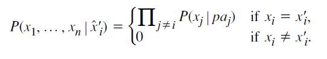
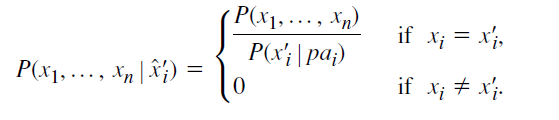
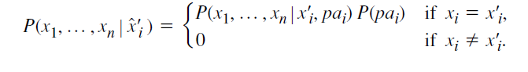
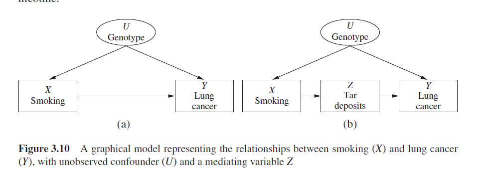

简介
在前一章中我们解决了怎样从原始数据中学习发现因果关系的问题，而很多领域中，人类已经有多年的研究历史，可以给出可靠的先验知识。我们接下来就将探索，在有数据和定性的因果假设相结合的情况下，如何推断出这些因果关系。
因果推理的知识允许我们去预测在一个假设的介入下，系统会做出怎样的反应。本章中将用因果图的形式，对介入给出一个形式化的语义概念。我们将看到，只要数据可以假设被一个无环的、没有隐变量的因果图所生成，那么我们就可以从非实验的数据中估计每一个介入带来的影响。
如果某些变量无法被测量，我们就会面临一个可识别性的问题。我们可以看到因果图为可识别性的分析提供了一个强大的数学工具，此外，我们将一系列推理规则命名为do-calculus,它可以用通过观察就可以得到的变量计算每一个用介入表达的变量。
本章将要介绍的算法可以帮助处理以下任务：
1.说明模型背后的假设。
2.判断给定的假设是否足够去获得目标量的一个一致估计。
3.如果2的结果是肯定的，那将目标量表示为一个可观测量的封闭表达式。
4.如果2的结果是否定的，那么给出一系列可选的观测和实验，使得目标量可估计。
马尔科夫模型中的介入
介入的表达
在第一章中，我们介绍了因果模型的概念，与概率模型不同，它可以帮助我们去预测介入的影响。Pearl 主张用一个有向无环图(DAG)表示我们感兴趣的变量之间的因果关系，并且这种因果关系是函数式，而不是概率式的，有如下表达
$$x_i = f_i(pa_i,\epsilon_i) $$
其中，$pa_i$代表$x_i$的双亲结点，$\epsilon_i$代表联合独立、任意分布的随机扰动。这些扰动项代表着研究者们选择被排除于分析之外的彼此独立的变量，它们至多只能影响图中的一个变量，否则必须要做为隐变量加入分析。
更一般地，我们可以用集合U代表所有未被观测到的因素(包括$\epsilon_i$),并用一个联合分布P(u)代表它们的概率分布。只要我们有了函数关系$f_i$和联合概率分布P(u)，就可以完整刻画出因果模型。如果因果图G(M)是无环的，那么M被成为是semi-Markovian,此外，如果未观测变量还是彼此独立的，那么M是Markovian的。
我们接下来要探讨的问题就是如何在一个Markovian的模型中处理介入问题。一个介入可以表达成对函数关系的一个子集的修改，同时保持其他函数关系不变。最简单的例子是只对单个变量进行的外部介入，比如强迫$X_i$取某个定值$x_i$,我们就要在模型中去除函数$x_i=f_i(pa_i,u_i)$,并用$X_i=x_i$替代，我们称这种介入是”原子”的，并用符号$do(X_i=x_i)$或者$do(x_i)$表示。
另一种表达是将介入或者函数关系当作一个变量加入因果模型，
$$x_i=I(pa_i,f_i,u_i)$$
其中，$I(a,b,c)=f_i(a,c),whenever\ b = f_i$
我们可以让$F_i$做为$X_i$的一个双亲结点加入图结构，我们可以通过调节$F_i$的取值(令它等于一个常数函数)，表达我们的介入。这样表达的另一个优点是可以方便地处理模型中函数关系的变化，而不仅仅是表达介入。
介入的计算
有了在因果模型中形式化地表达介入的方法后，我们接下来就应该要考虑如何计算介入对其他变量分布的影响。
首先考虑介入后的分解公式，由介入的定义不难发现下式，

上下同乘$P(x_i’|pa_i)$,可以化简为更简洁的形式，

进一步对$P(x’_i|pa_i)$进行分解，可以得到下式，

借助上式，我们可以估计$do(x_i)$对任意与$X_i \bigcup PA_i$不相交的变量集Y的因果影响，只要让上式对所有除$Y \bigcup X_i$外的变量求和即可。这样便可以得到一个求解直接影响的定理。
定理：Adjustment for Direct Causes
$PA_i$代表变量$X_i$的直接原因，Y是任意与${X_i\bigcup PA_i}$不相交的变量集合，那么介入do$(X_i=x’i)$对Y的影响等于下式：
$$P(y|do(x’_i))=\sum{pa_i}P(y|x_i,pa_i)P(pa_i)$$
其中，$P(y|x_i,pa_i)$和$P(pa_i)$代表介入前的概率分布。
上式通过调节$X_i$的双亲结点$PA_i$，并根据$PA_i=pa_i$的概率计算加权平均，最终得到对Y的影响，注意到通过这种方式，我们所需要的信息可以只是可以直接观测到的干预前的信息。
我们可选择的介入方式还可以进一步拓展，我们可以对一组变量集合$S$而不是单个变量进行修改，也可以不局限于用定值而用新的函数关系代替。
介入的可识别性
往往我们得到的非实验数据只能告诉我们变量的概率分布，而一个相同的概率分布可能可以兼容多个不同的因果模型，因此我们希望找到那些我们不用知道模型的全部细节信息就可以判断的因果量，这些因果量要在所有可能符合给定概率分布的模型中都相等，我们称这些因果量是可识别的。
定义：因果影响的可识别性
对一个给定的因果图G和G中变量的一个任意的概率分布P，X和Y是G中的两个不相交变量集，当下述情况可以满足时，我们称X对Y的因果影响是可识别的：
对每一对满足$G(M_1)=G(M_2)=G$和$P_{M_1}(v)=P_{M_2}(v)>0$的模型$M_1$和$M_2$,都有$P_{M_1}(y|do(x))=P_{M_2}{y|do(x)}$。
如果P(y|do(x))是可识别的，那我们可以保证X对Y的因果影响可以从下面两个来源的信息中得到：
(1).被动观测得到的概率函数P(v)
(2).因果图G,指出了哪些变量是决定某一个变量的直接原因。
控制干扰因子
当我们想要去计算X对Y的因果影响时，我们首先要解决要控制哪些其他的变量因素(Z)的问题，这些变量被称为”covariates”(协变量)、”concomitants”(伴随变量)或者”confounders”(干扰因子)。关于Z的调节意味着将数据分成相对于Z的不同子集，每个子集中数据在Z中变量上的取值相等，然后在不同子集上分别计算X对Y的影响，最后再计算平均结果。
这种对变量的调节方法，早在1899年，kearl Pearson发现Simpson悖论(第六章中会详细说明)时就被一起提出。但在实际情况中选取哪些变量是合适的，长久以来一直缺乏一个明确的标准，Pearl为此分别提出了Back-door Criterion 和 Front-door Criterion,在本节中我们将对这个问题进行介绍。
Back-door Criterion
我们将展示存在一个被Pearl成为”Back-door Criterion”简单的图形化的测试,它可以直接被用于因果图中，能够判断在给定一组变量集$Z \subseteq V$的情况下，P(y|do(x))是否可以被识别。
定义： Back-door 准则
在一个DAG G中，一组变量集Z相对于另一对有序变量对$(X_i,X_j)$满足back-door准则需要符合以下条件：
1.Z中没有结点是$X_i$的后代，并且
2.Z封锁了所有$X_i$和$X_j$的back-door path,即，有一个箭头指向$X_i$的连接$X_i$和$X_j$的路径(无视方向的路径)。
类似得，如果X和Y是变量的集合,那么称Z满足关于X和Y的back-door 准则,当且近当对每一对变量$(X_i,Y_j).X_i\in X,Y_j \in Y$,Z关于它们都满足back-door 准则。
命名为back-door的原因很好理解，我们只需要去封锁住那些箭头指向$X_i$的路径，这些路径没有传递真正的因果而是向最后的统计量中增加了虚假的关联性，因此我们形象地称这些路径为back-door。
定理：Back-Door Adjustment
如果一组变量Z满足相关于(X,Y)的back-door 准则，那么X对Y的因果影响就是可识别的，并且可以由下式给出：
$$P(y|do(x))=\sum_z P(y|x,z)P(z)$$
得到back-door adjustment的逻辑是简单且直接的，为了消除虚假的关联性，我们需要满足以下三个条件：
1.封锁住所有从X到Y的虚假路径。
2.所有X到Y的直接路径不会被干扰。
3.不会增加新的虚假路径。
我们需要阻断每一条backdoor criterion ，他们会导致X和Y互相依赖，但没有传递因果影响；但我们不能控制任何X的后代，因为后代可能会向Y传递直接的影响；最后，我们应该尽量不在backdoor 中控制一个collider,这样会打开一条backdoor,如果不得不这样做，那么必须在新增加的backdoor中控制其他非collider的变量。
严格的数学证明参考《causality》3.3.1
Front-door Criterion
back-door 准则只是可识别性的一个充分不必要条件，并不能覆盖所有识别因果的方法。在一些back-door不能判断的情况中，我们仍可以发现识别因果影响的方法。

如上图所示，在图(a)中，由于有不可观测的变量U,X -> Y的一条back-door没有办法被封锁，因此通过back-door 准则得到X -> Y的因果影响。
在图(b)中，我们在X和Y之间多了一个可观测的中间变量Z，此时我们仍然无法用back-door的方法解决，但我们可以使用Z打开一条新的通路。与back-door相对，我们称这条路径为front-door。
考虑经过介入do(x)后，图(b)中的联合分布为：
$$P(y,z,u|do(x))=p(y|z,u)P(z|x)P(u)$$
关于z和u求和，可以得到：
$$P(y|do(x)) = \sum_z P(z|x) \sum_u P(y|z,u)P(u)\tag{*}$$
等式左侧的P(y|do(x))即为我们的最终目标，由于u是不可观测的变量集，我们接下来想要寻找一个没有u出现的等价形式。注意到u只出现了在$\sum_u P(y|z,u)P(u)$中。
根据(b)中的图结构，我们可以得到下面的两个条件独立假设：
$$P(u|z,x)=P(u|x)$$
$$P(y|x,z,u)=P(y|z,u)$$
由此，可以得到：
$$
\begin{aligned}
P(y|z,u)P(u)&=\sum_x \sum_u P(y|z,u)P(u|x)P(x) \\
&=\sum_x \sum_u P(y|x,z,u)P(u|x,z)P(x)\\
&=\sum_x P(y|x,z)P(x)
\end{aligned}
$$
这样我们可以将公式中含u的用可观测的变量x,y,z计算出来，代回(*)式，可得
$$P(y|do(x))=\sum_z P(z|x) \sum_{x’}P(y|x’,z)P(x’) \tag{**}$$
等式右侧的数据都可以一致地从非实验数据中得到，由此，只要我们能找到一个像图中这样的中介变量Z,就可以得到一个X到Y的因果影响的无偏非参数估计。
更简单和直观的一种方法，(**)式也可以看作连续应用了两次back-door 准则，我们可以将X到Z的因果影响分解为
$$P(y|do(x))=\sum_z P(y|do(z))P(z|do(x)) $$
因此我们可以分别计算X对Z的因果影响，和Z到Y的因果影响。
X与Z之间没有其他路径，容易看出有$P(z|do(x))=p(z|x)$。
Z到Y之间有一条back-door $Z\leftarrow X \leftarrow U \rightarrow Y$，我们可以通过控制X来封锁这条back-door,
$$P(y|do(x)) = \sum_z P(y|do(z))P(z|do(x))$$
结合这两个back-door 公式就得到了(**)式。通过第二种思考方式，我们可以将front-door推广为如下定义。
定义：Front-Door
一个变量集合Z关于一组有序变量对(X,Y)满足Front-Door准则，意味着它满足以下条件：
1.Z封锁了所有X到Y的直接路径
2.X到Y之间不存在没有被封锁的back-door Path
3.所有从Z到Y的 back-door path都会被X封锁
定理：Front-Door Adjustment
如果存在Z关于(X，Y)满足front-door准则并且P(x,z)>0，那么X到Y的因果影响就是可识别的，并可由下式给出：
$$P(y|do(x))=\sum_z P(z|x) \sum_{x’}P(y|x’,z)P(x’)$$
值得注意的是，在上文中给出的定义有些过于严格了，情况2,3中的back-door也可以存在，只要我们能用其他可观测的变量封锁住它们。在下一节中，我们将介绍一种有效的符号化的机制，它可以用来处理更复杂的情况。
介入的 calculus
在本节中，我们将考虑一系列推理规则，这些规则提供了一种语义方法，使我们可以从观察得到的数据中推出(或验证)某个介入的因果影响。
我们假设给定了一个因果图G，图中有一部分结点是可观测的，另一部分是不可观测的，我们的目标是找到对某个变量集X的介入对另一个变量集Y的因果影响，即P(y|do(x)),我们想要找到的是这个表达式的一个等价形式，在这个等价形式中只包含可观测量的标准概率。如果目标表达式能够规约到这样一个等价形式，那X到Y的因果影响就是可以识别的。
这一系列推理和规约的规则，我们将它们称之为do-calculus。
Inference Rules
首先说明即将要用到的几个基本符号。令X,Y,Z是一个因果DAG G中的三个任意不相交的变量集，我们用$G_X$代表从G中删去所有指向X的有向边后的图，用$G_{\underline{X}}$代表从G中删去所有从X出发的有向边后的图，我们也可以用一个符号代表同时两种边的情况，如$G_{\overline{X}\underline}$。另外，$P(y|do(x),z)=P(y,z|do(x))/P(z|do(x))$代表在主动将X恒定控制为x并且观察到Z=z的情况下，Y=y的概率。
下面阐述三个最基本的推理规则：
定理：Rules of do Calculus
令G代表与某个因果模型相关的一个有向无环图，令$P(\cdot)$代表该因果模型中变量的概率分布，对任意不相交的变量集和X,Y,Z和W，我们有下列的规则：
Rule 1(Insertion/deletion of observations):
$$P(y|do(x),z,w)=P(y|do(x),w),\ if(Y \perp Z|X,W){G{\overline{X}}}$$
Rule 2(Action/observation exchange)
$$P(y|do(x),do(z),w) = P(y|do(x),z,w),\ if (Y\perp Z|X,W){G{\overline{X}\underline{Z}}} $$
Rule 3(Insertion/deletion of actions):
$$P(y|do(x),do(z),w)=P(y|do(x),w),\ if(Y\perp Z|X,W){G{\overline{X},\overline{Z(W)}}} $$
每条规则的推理都是根据“介入”的基本概念得出的，即do(X=x)意味着删去图中所有指向X的有向边，此时要考虑新得到的子图$G_{\overline{X}}$。详细的推倒可以参考《causality》3.4.2。
这三条规则已经被证明是完全的，可以充分地推出所有可识别的因果影响(Shpitser and Pearl 2006a; Huang and Valtorta 2006)。但是，如何用合理的顺序使用这些规则使得我们可以将目标规约成一个可计算的公式，我们尚且还没有一个系统化的方法，因此更直接的图形化的准则仍然被需要。
(完)